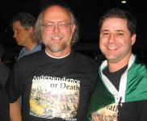

Those crazy Brazilians
Here's a picture of me with Bruno Souza, the most outspoken of the crazy Brazilian crowd that regularly attends JavaOne. You've probably seen him around: he's the one wearing the Brazilian flag as a cape. They did these great t-shits this year that are based on a famous painting of the battle for Brazilian Independence. They photoshoped Duke into the painting: on a horse, waving a sword...He's also involved in the Brazilian Healthcare project and was one of the folks who took me on the tour of the system. They're doing a talk this week that should be very cool.
| June 17, 2005 |